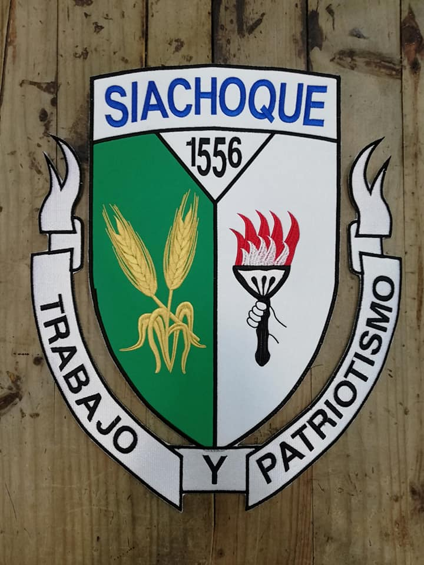
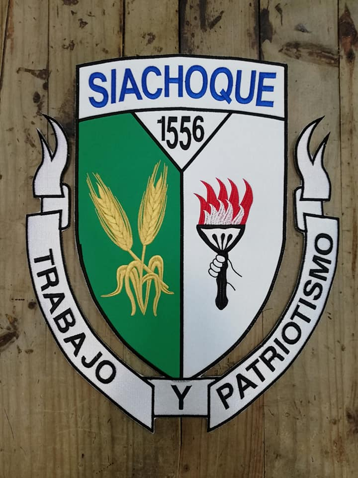
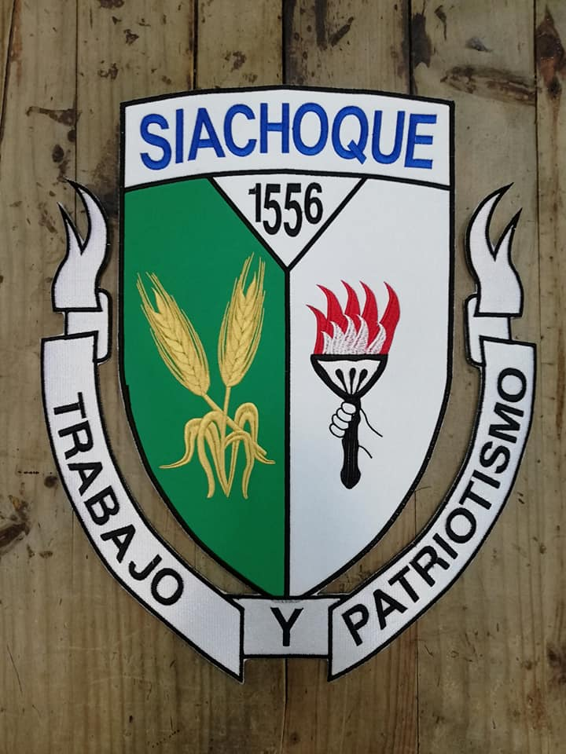

Bandera y Escudo
Descubre los símbolos que representan el orgullo de Siachoque.
 

Explora su cultura, historia y belleza natural
Descubre los símbolos que representan el orgullo de Siachoque.

Conoce los momentos históricos que han definido a este municipio a lo largo del tiempo.
Fundación: Siachoque fue fundado de facto en 1537 por Gonzalo Jiménez de Quesada. Sin embargo, la fundación oficial se llevó a cabo el 2 de agosto de 1556 por el padre Jerónimo de Peralta, enviado por el Arzobispo de Santafé de Bogotá.
Gobernantes Indígenas: Antes de la llegada de los españoles, la región estaba habitada por tribus gobernadas por el cacique muisca Sumindoco.
Encomenderos: El primer encomendero de Siachoque fue don Bartolomé de Otálora.
Iglesia y Comunidad: En 1763, el poblado fue elevado a la categoría de parroquia. Durante este tiempo, la iglesia de Siachoque se convirtió en un importante centro religioso y cultural.
Visita de Simón Bolívar: Simón Bolívar pasó por Siachoque dos veces: la primera el 10 de febrero de 1821 y posteriormente el 19 de marzo de 1828. Durante su segunda visita, el siachoquense José Manuel Vázquez contribuyó a la campaña libertadora enviando cobijas, ropa y caballos al ejército patriota.
Agricultura y Minería: La economía de Siachoque se basa en la agricultura y la minería. Entre los productos agrícolas se destacan la papa, el trigo, el maíz, la cebada, la avena y diversas hortalizas.
Artesanía: Los habitantes de Siachoque son conocidos por su destreza en la elaboración de prendas con lana, una tradición que se remonta a la época colonial.
Conoce las celebraciones más importantes del municipio.
Visita los sitios más emblemáticos de Siachoque.
Elige entre una variedad de planes turísticos adaptados para familias, aventureros y empresas.
Valor aproximado: $50,000 COP
Valor aproximado: $70,000 COP
Valor aproximado: $60,000 COP
Valor aproximado: $100,000 COP
Valor aproximado: $80,000 COP
dando click aqui